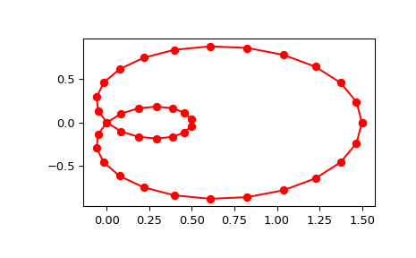

scipy.interpolate.splprep¶
-
scipy.interpolate.splprep(x, w=None, u=None, ub=None, ue=None, k=3, task=0, s=None, t=None, full_output=0, nest=None, per=0, quiet=1)[source]¶ Find the B-spline representation of an N-D curve.
Given a list of N rank-1 arrays, x, which represent a curve in N-D space parametrized by u, find a smooth approximating spline curve g(u). Uses the FORTRAN routine parcur from FITPACK.
- Parameters
- xarray_like
A list of sample vector arrays representing the curve.
- warray_like, optional
Strictly positive rank-1 array of weights the same length as x[0]. The weights are used in computing the weighted least-squares spline fit. If the errors in the x values have standard-deviation given by the vector d, then w should be 1/d. Default is
ones(len(x[0])).- uarray_like, optional
An array of parameter values. If not given, these values are calculated automatically as
M = len(x[0]), wherev[0] = 0
v[i] = v[i-1] + distance(x[i], x[i-1])
u[i] = v[i] / v[M-1]
- ub, ueint, optional
The end-points of the parameters interval. Defaults to u[0] and u[-1].
- kint, optional
Degree of the spline. Cubic splines are recommended. Even values of k should be avoided especially with a small s-value.
1 <= k <= 5, default is 3.- taskint, optional
If task==0 (default), find t and c for a given smoothing factor, s. If task==1, find t and c for another value of the smoothing factor, s. There must have been a previous call with task=0 or task=1 for the same set of data. If task=-1 find the weighted least square spline for a given set of knots, t.
- sfloat, optional
A smoothing condition. The amount of smoothness is determined by satisfying the conditions:
sum((w * (y - g))**2,axis=0) <= s, where g(x) is the smoothed interpolation of (x,y). The user can use s to control the trade-off between closeness and smoothness of fit. Larger s means more smoothing while smaller values of s indicate less smoothing. Recommended values of s depend on the weights, w. If the weights represent the inverse of the standard-deviation of y, then a good s value should be found in the range(m-sqrt(2*m),m+sqrt(2*m)), where m is the number of data points in x, y, and w.- tint, optional
The knots needed for task=-1.
- full_outputint, optional
If non-zero, then return optional outputs.
- nestint, optional
An over-estimate of the total number of knots of the spline to help in determining the storage space. By default nest=m/2. Always large enough is nest=m+k+1.
- perint, optional
If non-zero, data points are considered periodic with period
x[m-1] - x[0]and a smooth periodic spline approximation is returned. Values ofy[m-1]andw[m-1]are not used.- quietint, optional
Non-zero to suppress messages. This parameter is deprecated; use standard Python warning filters instead.
- Returns
- tcktuple
(t,c,k) a tuple containing the vector of knots, the B-spline coefficients, and the degree of the spline.
- uarray
An array of the values of the parameter.
- fpfloat
The weighted sum of squared residuals of the spline approximation.
- ierint
An integer flag about splrep success. Success is indicated if ier<=0. If ier in [1,2,3] an error occurred but was not raised. Otherwise an error is raised.
- msgstr
A message corresponding to the integer flag, ier.
See also
Notes
See
splevfor evaluation of the spline and its derivatives. The number of dimensions N must be smaller than 11.The number of coefficients in the c array is
k+1less then the number of knots,len(t). This is in contrast withsplrep, which zero-pads the array of coefficients to have the same length as the array of knots. These additional coefficients are ignored by evaluation routines,splevandBSpline.References
- 1
P. Dierckx, “Algorithms for smoothing data with periodic and parametric splines, Computer Graphics and Image Processing”, 20 (1982) 171-184.
- 2
P. Dierckx, “Algorithms for smoothing data with periodic and parametric splines”, report tw55, Dept. Computer Science, K.U.Leuven, 1981.
- 3
P. Dierckx, “Curve and surface fitting with splines”, Monographs on Numerical Analysis, Oxford University Press, 1993.
Examples
Generate a discretization of a limacon curve in the polar coordinates:
>>> phi = np.linspace(0, 2.*np.pi, 40) >>> r = 0.5 + np.cos(phi) # polar coords >>> x, y = r * np.cos(phi), r * np.sin(phi) # convert to cartesian
And interpolate:
>>> from scipy.interpolate import splprep, splev >>> tck, u = splprep([x, y], s=0) >>> new_points = splev(u, tck)
Notice that (i) we force interpolation by using s=0, (ii) the parameterization,
u, is generated automatically. Now plot the result:>>> import matplotlib.pyplot as plt >>> fig, ax = plt.subplots() >>> ax.plot(x, y, 'ro') >>> ax.plot(new_points[0], new_points[1], 'r-') >>> plt.show()
